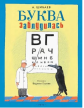

Буква заблудилась

Эта книга развеселит и ребёнка, и взрослого. Оказывается, стоит поменять в стихотворении всего лишь одну букву - и оно становится забавной выдумкой. Но не надо бояться за пропавшую букву: она не исчезла насовсем, а просто спряталась на рисунке Вадима Гусева. Помимо веселья, книга подарит идею весёлой и полезной игры: заменяя в слове по одной букве, можно создавать новые слова. А ещё эти забавные стихи легко запоминаются, их можно декламировать и петь.